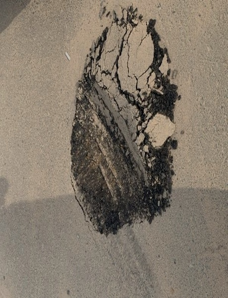

THE PROBLEM
الضرر لا يُرى…
حتى يُبلَّغ عنه.
قد يمرّ عليه كثيرون، ويبقى في مكانه… حتى يتوقّف أحدهم، ويلتقط صورة، ويرسل بلاغًا.
بلاغINC-21-06-038549
- التاريخ
- 10.06.2021 · 16:52
- المرفقات
- 3 photos
- الحالة
- بانتظار الفحص



بانتظار الفحص
THE DATA
صور بلاغاتٍ حقيقية
Saudi Arabia Public Roads Visual Pollution Dataset · Mendeley
31,795
صورة
41,804
مربّعًا محدّدًا
3
فئات
pothole25,97562%
sidewalks7,41218%
THE HIDDEN FLAW
ثلاث صور… بلاغٌ واحد
تقسيمٌ عشوائي: النموذج يحفظ المكان بدل أن يتعلّم الضرر.
1,250
صورة مكرّرة
1,153
بين train وval
1,648
بلاغًا مُقسَّمًا
TRAINTESTAUGMENTATION
نُدرّبه على
كل الظروف
class weights · وزنٌ أكبر للفئات الأقلّ
1.87sidewalks
0.53pothole

original
٨
ي و ل
KSA
8
YOL
YOLOv8n
لا يكتفي بالتسمية… يحدّد موضع كل ضرر في تمريرةٍ واحدة.
imgsz
640
epochs
30
batch
100
patience
5
params
3.01M
export
ONNX


REC · YOLOv8n
ON THE GROUND
ثم أخذناه إلى الشارع.
فيديو حقيقي من شوارع الرياض
 الشارع الأول
الشارع الأول الشارع الثاني
الشارع الثانيكاشف